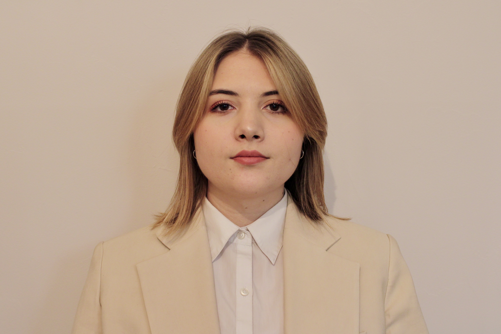

My resume

Summary
Motivated junior web developer transitioning from a medical background to tech.
Education
- Bogomolets National Medical University (2020-2026)
- Degree: Major in Medicine (in progress)
- The Complete 2024 Web Development Bootcamp 2024-now
- Projects:
- Responsive Portfolio Website.
Work expirience
-
Medical consultant - pharmasy "Bila Romashka"
February - May 2023
- Provided expert consultation to customers, ensuring accurate product recommendations.
- Collaborated with pharmaceutical representatives to maintain knowledge of product updates.
- Streamlined stock management, optimizing workflow and improving efficiency.
-
Work and Travel Programm
Fastfood crew - Dunkin` Donuts
- Delivered exceptional service during peak hours, maintaining speed and accuracy.
- Proactively addressed customer needs, improving satisfaction and repeat visits.
-
Serve assistant - Samoset
July - August 2024
- Ensured smooth table service, enhancing the dining experience for guests.
- Supported team operations in a high-pressure environment, showcasing adaptability.
Internships and Volunteering
Volunteer
- Participated in preparing and packaging canned food to support humanitarian needs during the war.
- Wove camouflage nets for military use, contributing to defense efforts in frontline regions.
Dental Assistant:
- Provided chairside support during dental procedures
Internship - Ultrasound Diagnostics (FAST, joints, heart):
- Gained hands-on experience with diagnostic imaging.
Operating Nurse Assistant:
- Assisted during vascular surgery, ensuring sterilization and preparation of instruments.
Physiotherapy Internship:
- Supported patients undergoing rehabilitative treatments.
Skills
- Languages
- Native Ukrainian, Russian speaker
- Advanced in English
- Soft skills:
- Resilience,
- Continuous learning and learning strategies,
- Brainstorming,
- Responsibility,
- Adaptability,
- Active listening,
- Goal-oriented.
- Hard skills
Awards and Certifications
- 1st place 2024 spring student scientific session
- 3st place Annual young medical scientists` conference 2024
- Certified in Tactical First Aid (bleeding control, emergency care).
Hobbies
- travelling (visited 10+ countries)
- photography